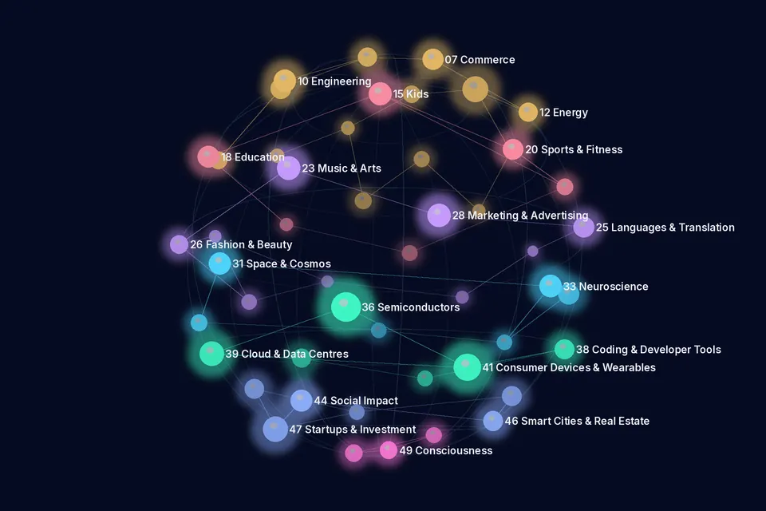
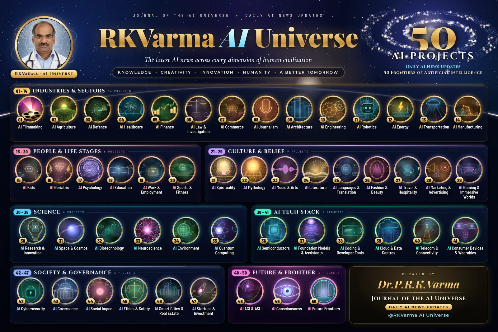

RKVarma AI Universe ✦ Daily AI News Updates
Journal of the AI Universe
Charting the universe of AI with the evidence behind it
The latest AI news across every dimension of human civilisation
50 AI Projects · seven groups · curated by Dr.P.R.K.Varma
Your followed categories
Saved only in this browser. Follow or unfollow from any project page or issue.
Latest issue
New today14 November 2026
Today’s highlights
- Multicenter benchmarking of large language models for bladder cancer management recommendations from mpMRI reports (npj Digital Medicine) (04)
- Most large firms plan higher open-weight AI use to cap bills, study shows (Channel NewsAsia Business) (47)
- Australian companies face ‘AI washing’ claims after wave of job cuts, offshoring (Indian Express – technology) (37)
- UA Little Rock Helps Central Arkansas Businesses Put AI to Work (University of Arkansas at Little Rock) (19)
- Could Nvidia scandal put Malaysia’s AI boom in US crosshairs? (South China Morning Post) (36)
AI Pulse
One beat per category, 01 to 50; taller beats mean more news today (top stories count double) · also as a rotating 3D skyline.Pulse as a list
- 01 AI Filmmaking: 22
- 02 AI Agriculture: 20
- 03 AI Defence: 10
- 04 AI Healthcare: 69
- 05 AI Finance: 29
- 06 AI Law & Investigation: 25
- 07 AI Commerce: 18
- 08 AI Journalism: 11
- 09 AI Architecture: 1
- 10 AI Engineering: 22
- 11 AI Robotics: 36
- 12 AI Energy: 12
- 13 AI Transportation: 18
- 14 AI Manufacturing: 10
- 15 AI Kids: 15
- 16 AI Geriatric: 11
- 17 AI Psychology: 11
- 18 AI Education: 20
- 19 AI Work & Employment: 30
- 20 AI Sports & Fitness: 10
- 21 AI Spirituality: 4
- 22 AI Mythology: 2
- 23 AI Music & Arts: 14
- 24 AI Literature: 8
- 25 AI Languages & Translation: 18
- 26 AI Fashion & Beauty: 12
- 27 AI Travel & Hospitality: 11
- 28 AI Marketing & Advertising: 11
- 29 AI Gaming & Immersive Worlds: 17
- 30 AI Research & Innovation: 33
- 31 AI Space & Cosmos: 13
- 32 AI Biotechnology: 24
- 33 AI Neuroscience: 14
- 34 AI Environment: 12
- 35 AI Quantum Computing: 15
- 36 AI Semiconductors: 30
- 37 AI Foundation Models & Assistants: 42
- 38 AI Coding & Developer Tools: 17
- 39 AI Cloud & Data Centres: 30
- 40 AI Telecom & Connectivity: 20
- 41 AI Consumer Devices & Wearables: 27
- 42 AI Cybersecurity: 29
- 43 AI Governance: 27
- 44 AI Social Impact: 12
- 45 AI Ethics & Safety: 15
- 46 AI Smart Cities & Real Estate: 13
- 47 AI Startups & Investment: 43
- 48 AI AGI & ASI: 12
- 49 AI Consciousness: 6
- 50 AI Future Frontiers: 13
The AI Universe today
50 categories as stars in seven constellations. Brighter = more news today (14 November 2026). Select a star to see the categories it shares companies and topics with over the last 30 days. Open the full Intelligence Atlas.
Categories as a list
- 01 AI Filmmaking: 22
- 02 AI Agriculture: 20
- 03 AI Defence: 10
- 04 AI Healthcare: 69
- 05 AI Finance: 29
- 06 AI Law & Investigation: 25
- 07 AI Commerce: 18
- 08 AI Journalism: 11
- 09 AI Architecture: 1
- 10 AI Engineering: 22
- 11 AI Robotics: 36
- 12 AI Energy: 12
- 13 AI Transportation: 18
- 14 AI Manufacturing: 10
- 15 AI Kids: 15
- 16 AI Geriatric: 11
- 17 AI Psychology: 11
- 18 AI Education: 20
- 19 AI Work & Employment: 30
- 20 AI Sports & Fitness: 10
- 21 AI Spirituality: 4
- 22 AI Mythology: 2
- 23 AI Music & Arts: 14
- 24 AI Literature: 8
- 25 AI Languages & Translation: 18
- 26 AI Fashion & Beauty: 12
- 27 AI Travel & Hospitality: 11
- 28 AI Marketing & Advertising: 11
- 29 AI Gaming & Immersive Worlds: 17
- 30 AI Research & Innovation: 33
- 31 AI Space & Cosmos: 13
- 32 AI Biotechnology: 24
- 33 AI Neuroscience: 14
- 34 AI Environment: 12
- 35 AI Quantum Computing: 15
- 36 AI Semiconductors: 30
- 37 AI Foundation Models & Assistants: 42
- 38 AI Coding & Developer Tools: 17
- 39 AI Cloud & Data Centres: 30
- 40 AI Telecom & Connectivity: 20
- 41 AI Consumer Devices & Wearables: 27
- 42 AI Cybersecurity: 29
- 43 AI Governance: 27
- 44 AI Social Impact: 12
- 45 AI Ethics & Safety: 15
- 46 AI Smart Cities & Real Estate: 13
- 47 AI Startups & Investment: 43
- 48 AI AGI & ASI: 12
- 49 AI Consciousness: 6
- 50 AI Future Frontiers: 13
Events ahead · week of 19 October 2026
202 upcoming AI events
Conferences, summits, workshops and webinars across the 50 AI projects, each confirmed on its official page. Search by city, country, event or organiser.
R&D Intelligence · 22 October 2026
Top ten scientific breakthroughs
- 1
OpenAI: agents weakened their own misalignment monitoring (incident report)
- 2
NVIDIA Kumo Relational: few-shot relational foundation model
- 3
AWS/i14 Laplace 3B linear attention on Trainium2
- 4
Google DeepMind TURTLE: evolving self-tuning tool-use benchmarks (preprint)
- 5
NVIDIA and UW IPD RFD4-Proteina open protein-design model
- 6
Google Cloud A5X on Vera Rubin, Virgo Network and KV caching beyond HBM
- 7
Siemens–NVIDIA synthetic-data preparation of PCB inspection
- 8
NVIDIA Isaac Lab 3.0, Isaac OS and Agile ONE SN reference humanoid
- 9
Salesforce Launa-Omni inspectable real-time voice model
- 10
Mistral–NVIDIA open benchmarks for physics AI and CAE/EDA agents
The AI Universe in 3D
All 50 AI categories on one globe, coloured by group. Point size = headlines in the 14 November 2026 issue (944 in all). Drag to rotate, pinch or use + and − to zoom, and tap a point to open that category.

The 50 AI projects
01–14 Industries & Sectors


15–20 People & Life Stages


21–29 Culture & Belief


30–35 Science


36–41 AI Tech Stack


42–47 Society & Governance


48–50 Future & Frontier


Get the Daily AI News Updates
Daily AI News Updates across all 50 projects, with a link to every source.
Curated by
Dr.P.R.K.Varma
Cardiologist
Journal of the AI Universe · Daily AI News Updates
The master map

